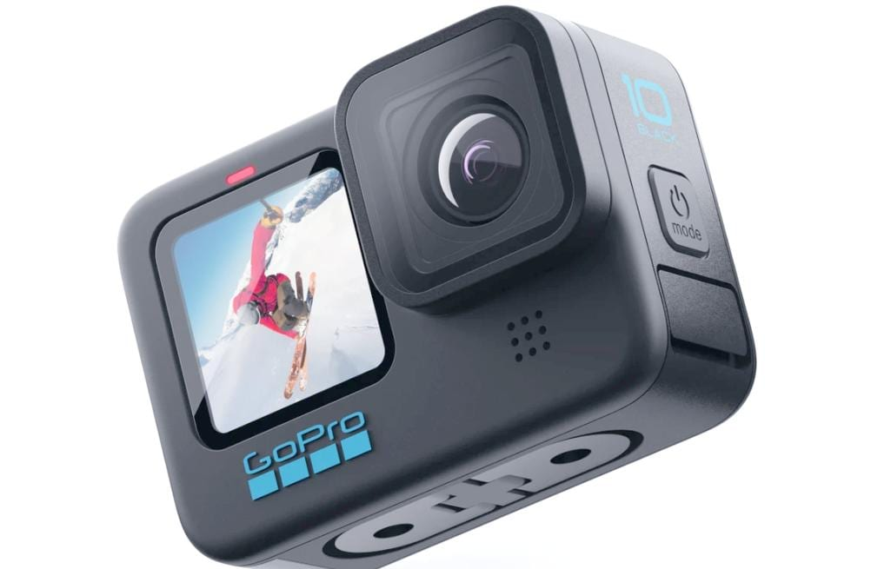

GoPro HERO10 Black

5.3K 加 GP2 芯片，全能运动相机代表。
客观评测
HERO10 Black 搭载 GP2 处理器与约 1/1.9 英寸传感器，支持 5.3K/60p、4K/120p 与 2.7K/240p 慢动作录制，配合 HyperSmooth 4.0 防抖，运动画面稳定流畅。裸机防水 10 米，前后双彩屏方便取景与自拍，支持语音控制与 GPS 记录。短板是高感表现一般，5.3K 高帧率下发热明显，续航约 80 分钟偏短，需搭配大容量高速 microSD 卡。
主观点评
HERO10 是能上天入水的记录工具：头盔、胸口、车把、潜水壳，几乎任何位置都能固定。防抖效果堪称魔法，奔跑拍摄也如同滑轨。界面响应比前代明显流畅，快拍体验爽快。代价是发热量不小，长时间高规格录制会罢工，暗光画质也难与大底相机相比。但对运动与户外场景而言，它是目前综合体验最均衡的运动相机之一。
优点与不足
- 裸机 10 米防水，配件生态极其丰富
- HyperSmooth 防抖效果堪称魔法
- 5.3K 高帧率，慢动作创作空间大
- 高规格录制下发热明显
- 小底传感器暗光画质一般
参数规格
| 类型 | 运动相机 |
|---|---|
| 传感器 | 约 1/1.9 英寸 CMOS |
| 像素 | 约 2300 万（照片） |
| 镜头 | 超广角定焦，约 f/2.5 |
| 视频 | 5.3K/60p，4K/120p，2.7K/240p |
| 防抖 | HyperSmooth 4.0 电子增稳 |
| 对焦 | 固定超焦距，全自动 |
| 取景 | 2.27 英寸前置屏 + 2 英寸背面触摸屏 |
| 防水 | 裸机约 10 米 |
| 存储 | microSD 卡（建议 V30 高速卡） |
| 重量 | 约 153 克（含电池） |